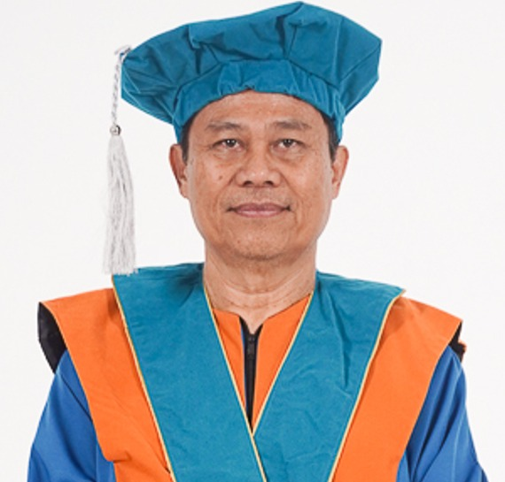

Visi & Misi
VISI
Fakultas yang unggul pada tingkat global dalam mengelola bidang ilmu komputer, berorientasi global, menjunjung tinggi nilai-nilai integritas dan bersemangat kebhinekaan untuk berkontribusi nyata bagi pembangunan masyarakat Indonesia yang semakin bermartabat.
MISI
Tujuan
Menghasilkan lulusan yang dapat berelasi dengan pihak industri dan dunia Usaha disertai semangat spiritualitas dan memiliki kerendahan hati dalam melayani.
Berkontribusi dalam memperluas akses pendidikan tinggi bagi masyarakat di bidang Informatika, Sistem Informasi, Rekayasa Perangkat Lunak.
Turut berkontribusi dalam mencerdaskan kehidupan bangsa yang dilandasi nilai-nilai Pancasila, etika akademis, moral, iman, dan takwa.
Memberikan kontribusi berkualitas dalam pengembangan IPTEK di bidang penelitian dan pengabdian yang berdampak transformatif.
Mengembangkan relasi dengan industri, pemerintah, dan institusi pada tingkat regional, nasional, maupun internasional yang saling menguntungkan.
Nilai-Nilai Inti

Integrity & Ethics
Menjalani hidup dengan transparan dan jujur.

Excellence
Menghasilkan karya yang lebih dari yang diharapkan dalan situasi apapun.
Compassion
Menempatkan kemanusiaan dan tujuan yang lebih mulia di atas kepentingan pribadi.
Humility
Menjadi pribadi yang rendah hati, membuka diri, dan terus memperbaiki diri.
Prospek Karir
Lulusan FST Upitra siap berkarir di berbagai bidang teknologi di era digital.